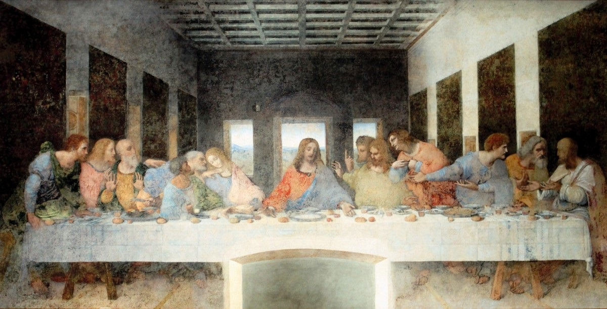

_-_The_Last_Supper_(1495-1498).jpg){kind=link}
Podría decirse que la clave más importante para comprender el interés de toda la vida de Leonardo por la comida reside en las circunstancias de su infancia. Nació el 15 de abril de 1452 en Vinci, cerca de Florencia, hijo de Ser Piero da Vinci, un notario florentino, y Caterina, una dama de Vinci. Unos meses después de su nacimiento, su padre se casó con una joven florentina de 16 años y su madre se casó con Accatabriga di Piero del Vacca, un pastelero desempleado de Vinci.
Leonardo crece entre dos familias, pero es el rudo y desordenado Acatabriga quien lo colma de dulces, le enseña los puntos más delicados de la cocina y le deja tallar con mazapán endurecido por el sol de la Toscana, de donde Leonardo adquiere el gusto por los dulces y la pasión por la comida, que le acompañarán toda su vida y pondrán en peligro el éxito de muchas de sus obras. Se puede decir mucho sobre Leonardo, pero por mucho que digamos en este sentido, sigue siendo un desconocido. Leonardo fue pintor, escultor, ingeniero, arquitecto, físico, biólogo, filósofo, geómetra, botánico, modisto, inventor de juegos de mesa y utensilios de cocina, cartógrafo, autor de tratados de óptica y jardinero. Diseñador, decorador, interiorista, urbanista. proyectista, fundidor... Y en cada uno de estos aspectos sus habilidades asombraron a sus contemporáneos. Ninguna otra persona en la historia de la humanidad puede tener un registro tan completo. Este genio artístico del Renacimiento fracasó por una de sus mayores pasiones: la cocina. Como suele ocurrir, se adelantó a su tiempo, proponiendo la "nouvelle cuisine" con una sutileza y una sofisticación que nadie podía entender. Pero que hoy definitivamente será un gran éxito. Además, diseñó todo tipo de dispositivos mecánicos (anteriores a los actuales) para mejorar el ambiente en grandes cocinas, agilizar el trabajo, reducir olores, etc.
No se diferenciaba mucho de los jóvenes de nuestro tiempo. Como el dinero pagado por su maestro no le llegaba, trabajaba por las noches sirviendo comida en la famosa taberna "Tres Caracoles" de Florencia. En la primavera de 1473, Leonardo asumió la dirección de la cocina después de que todos los chefs murieran misteriosamente. Como era de esperarse, Leonardo intentó cambiar el plato principal por polenta. La polenta es un producto elaborado a partir de harina secada al sol, mezclada con agua y adicionada con todo tipo de especias. Su sugerencia fue servir pequeñas porciones de exquisitos manjares en lugar del típico plato de carnes variadas. No fue comprendido y tuvo que huir para salvar su vida. Fue creado en colaboración con M. Sforza en 1509 por orden de Luis XII. Uno de los descubrimientos más trascendentes de Francia, inventó los espaguetis. Inventó una máquina que convertía la masa de pasta en hilos largos y finos. Cuando se corta y se cuece al fuego, se convierte en espagueti, o como lo llamó Leonardo, "spago mangiabile" (hilo comestible). Nunca renunció a su gran y a menudo incomprendida pasión por la cocina. Prueba de ello es el hecho de que dedicó los últimos tres años de su vida a este arte, hasta su muerte en 1519, bajo el patrocinio del rey Francisco I.